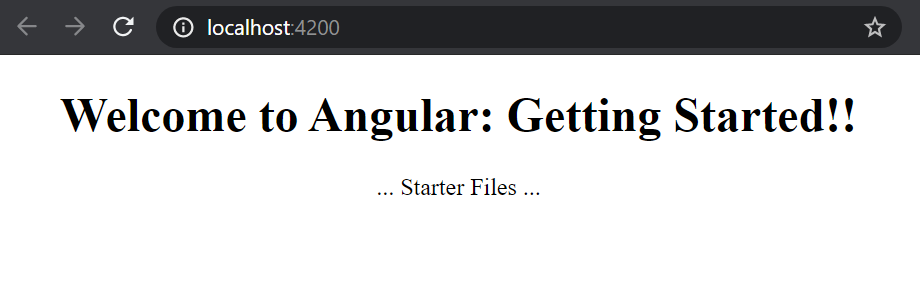

These are my study notes for the coure Angular: Getting Started from Deborah Kurata, on pluralsight.
The course duration is 5h43m.
Get source code from here:
A blog post from Deborah to support the course is here:
https://blogs.msmvps.com/deborahk/angular-2-getting-started-problem-solver/
git clone https://github.com/DeborahK/Angular-GettingStarted.git cd .\Angular-GettingStarted\
The main demo app is "APM" which stands for "Acme Product Management"
Under the APM-Start folder, here's the initial structure
├───e2e
│ └───src
└───src
├───api
│ └───products
├───app
│ ├───home
│ └───shared
├───assets
│ └───images
└───environments
The web application itself is under the APM-Start\src folder. All the files in the APM-Start folder itself are there to support the tooling and the language and the frameworks etc. Go into the src folder for the real stuff.
setup environment:
Already have it? check you have version at least 6.9.0 (from 2019)
npm --version
6.14.1
Fiiiine.
But how do we get the angular cli?
npm install -g @angular/cli
That's how you get the super dooper useful angular cli.
Basic angular application has:
Can use angular cli to do all this...
In:
~\learning\Angular\Angular-GettingStarted\APM-Start\
Run:
npm install
There will be some warnings and a bunch of mess, but it will hopefully succeed at installing all the packages required by your little app.
Hmmm.
Warning near the start....
core-js@2.6.11: core-js@<3 is no longer maintained and not recommended for usage due to the number of issues. Please, upgrade your dependencies to the actual version of core-js@3.
...and eventually a bunch of fatal errors.
Ok, i'll run it a second time. This time it ran quicker but failed because of a locked file called something pinkie.
OK I restarted my console and ran it a 3rd time.
This time it "succeeded" What a mess.
We know it succeeded because it had this line in the output...
added 1074 packages from 1046 contributors, removed 1 package, updated 2 packages, moved 1 package and audited 17156 packages in 104.591s
But also this line...
21 packages are looking for funding
run `npm fund` for details
..okay. And this:
found 7 vulnerabilities (2 low, 3 moderate, 2 high)
run `npm audit fix` to fix them, or `npm audit` for details
(OK -- I ran npm audit fix and that stopped me from being able to use anything. Then I checked at the course discussion group and a lot of people did that and Deborah told each of them "no please don't run npm audit fix, that will stop it from working. So just ignore those errors. As a result of running npm audit fix I had to delete the repo and re-clone it. So don't do that.)
NOW when I run:
npm start
...it starts and I get to the welcome screen:
When we run npm start we are running an npm script like this:
if you look inside the file package.json you will find a node like this:
"scripts": {
"ng": "ng",
"start": "ng serve -o",
"build": "ng build",
"test": "ng test",
"lint": "ng lint",
"e2e": "ng e2e"
},
Those scripts are a map of friendly little names on the left to 'complex' commands on the right.
So when we run npm start it is a shortcut to running: npm run ng serve -o

Can download the exercise files from:
https://app.pluralsight.com/library/courses/angular-2-getting-started-update/exercise-files
(I've put them in my ~learning/angular/ folder)